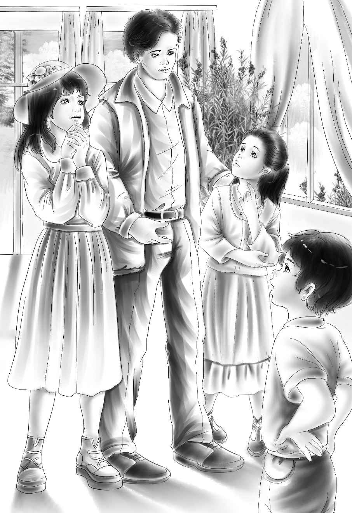

Early the next morning，the four Alden children climbed into Mr. Pond’s car. He had come to take them to Stony Creek. They were going to see the sheriff，Mr. Bates.
Mr. Pond was very quiet. He was worried about these nice children. He liked them，even though he had only known them a short time. And he was worried about Jane Alden，too. He had known her for many years. He knew well enough that she had always been cross and hard to get along with. But he was very sorry for her. He didn’t want any of them to be upset by these three strange men.
They drove up in front of the courthouse in Stony Creek and Mr. Pond stopped the car.
“Come right in，” called Mr. Bates. “I’m glad you came. I don’t often have so much company.”
“Hello，Bates，” said Mr. Pond. “These are the Alden children.”
“I had already guessed that，” said Mr. Bates. He took his guests to a small back room and shut the door.
They all sat down.
“Well，what brings you here？” asked Mr. Bates.
Mr. Pond said，“We came to see you about police business. There is something going on in the Alden woods. It looks as if someone has been living in an old hut there.”
Mr. Bates didn’t look surprised. He just waited for Mr. Pond to go on.
“That isn’t all，” Mr. Pond said. “Three strange men tried to make Miss Jane Alden sell her ranch. They told her it was no good. Say，Bates，you act as if you knew something that I don’t. What do you really think about all this？” Mr. Bates just sat and smiled.
“Maybe you won’t have to worry about those men any longer，” he said. “And I don’t think anyone will be staying in that hut，either. But I’ll wait and let Mr. Carter tell you all about it.”
“Mr. Carter？ Who would that be？” asked Benny.
“He is a very important man，” Mr. Bates said，still smiling. “Here he comes now.”
A car stopped just behind Mr. Pond’s. A good looking young man got out. He was very tall. He had soft brown hair. When he stood in the door，Jessie and Violet looked at him with their mouths open. Then they looked at one another.
Jessie could hardly talk. “Oh，Violet，” she whispered，“Our Mystery Man！”
“Are you surprised？” asked Mr. Carter，laughing.
“We certainly are，” said Benny. “We thought you might be a bad man. That is，Henry thought so，anyway.”
“Benny！” Henry said，blushing. “I didn’t really think that，Mr. Carter. I just thought the police should—I mean—well，you were a stranger，and—”

“That’s all right，Henry，” said the Mystery Man，smiling again. “That was a smart thing to think.”
“But if you’re not a bad man，who are you？”asked Benny.
“Well，I’ve been working for you，but you didn’t know it.”
“Working for us？” asked Benny. “You don’t look like a ranch hand.”
“There are many ways to work，” Mr. Carter said. “And one of them is looking for uranium.”
“Uranium！” Jessie cried. She had finally found her voice again.
“Yes，” said Mr. Carter. “My job is to look for uranium. I found a field of it right on your ranch.”
“Do you mean that all of that Indian dust is really uranium？” asked Violet.
“It certainly is，” Mr. Carter answered，looking at all the surprised faces around him. “But why were you looking there？”asked Violer.“And who are those three tough men？”
Mr.Carter answered slowly，“I work for a man you may have heard of. Mr.Alden of Greenfield.”
“Grandfather！”the children cried.
“Yes. Mr.Alden hired me to look for uranium for him. There is a lot of it in this part of the country. But when I found it on your ranch，I also found that someone had been there first.”
“That must be those three men！”Henry said.
“Yes. They were looking for uranium，too. But they are not honest. When they found a place that had uranium，they tried to buy the land cheap. They didn’t tell people what they had found.”
“That’s just what they tried to do to us，”Violet said.
“Yes，”Mr.Carter went on，“but Mr.Bates and I caught up with them. You won’t be bothered by them again.”
“Are they the ones who stayed in that hut on our ranch？”asked Jessie.
“Yes. But I had an eye on them. They couldn’t have hurt you，”Mr.Carter said.
Henry spoke slowly，“This means that the ranch is worth a lot of money，doesn’t it？”
“It certainly does，”said Mr.Carter.
“Wait till I tell Aunt Jane！”shouted Benny.
“Can we tell people？”asked Henry.
“I suppose so，”said Mr.Carter.“It is no longer a secret. I’m afraid your ranch will not be quiet much longer. Your place will soon be full of strangers.”Maybe some of them will try to take rocks away from your uranium fields." He looked worried for the first time since he had come in the door.
“What can we do？” asked Jessie. “It would be terrible to upset Aunt Jane iust when she is getting better.”
“Can you help them，Mr. Pond？” asked Mr.Carter.
“No，I’m afraid not，” said Mr. Pond. “It is too big a job for me.I think the children need a smarter man than I am. And they need someone with enough money to dig a mine.”
Henry said，“I think I know the very man.”
The four children shouted together，“Grandfather！”